9. Regression Algorithm¶
Note
A journey of a thousand miles begins with a single step – old Chinese proverb
In statistical modeling, regression analysis focuses on investigating the relationship between a dependent variable and one or more independent variables. Wikipedia Regression analysis
In data mining, Regression is a model to represent the relationship between the value of lable ( or target, it is numerical variable) and on one or more features (or predictors they can be numerical and categorical variables).
9.1. Introduction¶
Given that a data set 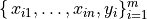 which contains n features (variables) and m samples (data points), in simple linear regression model for modeling  data points with
data points with  independent variables: 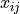, the formula is given by:
independent variables: 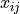, the formula is given by:
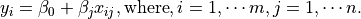
In matrix notation, the data set is written as ![\X = [\x_1,\cdots, \x_n]](_images/math/a5d03d268bc1ce4982a508f5ca4713472be7ac92.png) with
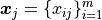,
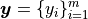 (see Fig. Feature matrix and label)
and 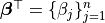.
Then the matrix format equation is written as
with
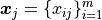,
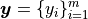 (see Fig. Feature matrix and label)
and 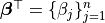.
Then the matrix format equation is written as
(1)¶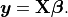
Feature matrix and label
9.2. Ordinary Least Squares Regression (OLSR)¶
9.2.1. How to solve it?¶
Theoretically, you can apply all the following methods to solve (1) if you matrix  have a good properties.
have a good properties.
Direct Methods (For more information please refer to my Prelim Notes for Numerical Analysis)
For squared or rectangular matrices
- Singular Value Decomposition
- Gram-Schmidt orthogonalization
- QR Decomposition
For squared matrices
- LU Decomposition
- Cholesky Decomposition
- Regular Splittings
Iterative Methods
Stationary cases iterative method
- Jacobi Method
- Gauss-Seidel Method
- Richardson Method
- Successive Over Relaxation (SOR) Method
Dynamic cases iterative method
- Chebyshev iterative Method
- Minimal residuals Method
- Minimal correction iterative method
- Steepest Descent Method
- Conjugate Gradients Method
9.2.2. Ordinary Least Squares¶
In mathematics, (1) is a overdetermined system. The method of ordinary least squares can be used to find an approximate solution to overdetermined systems. For the system overdetermined system (1), the least squares formula is obtained from the problem
(2)¶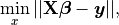
the solution of which can be written with the normal equations:
(3)¶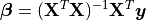
where indicates a matrix transpose, provided 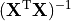 exists (that is, provided has full column rank).
9.3. Linear Regression (LR)¶
TO DO …..